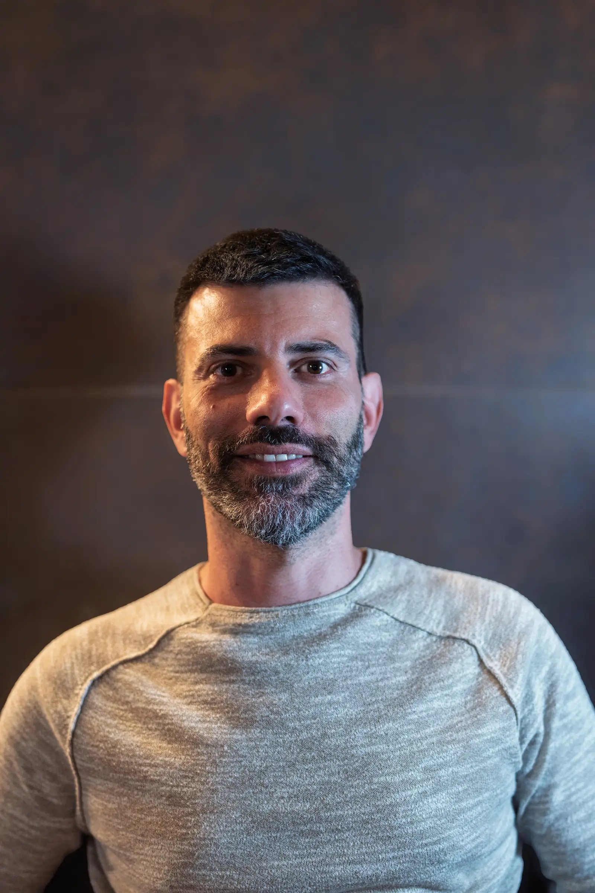
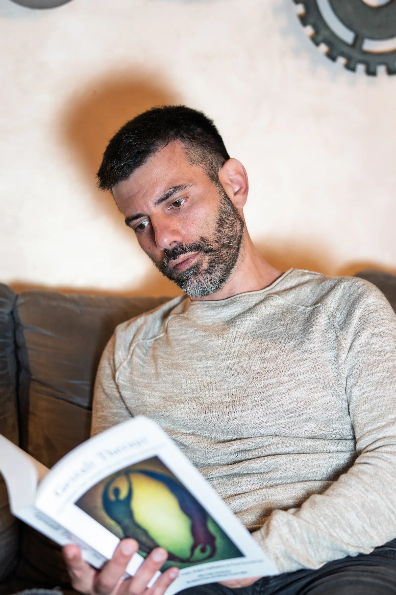
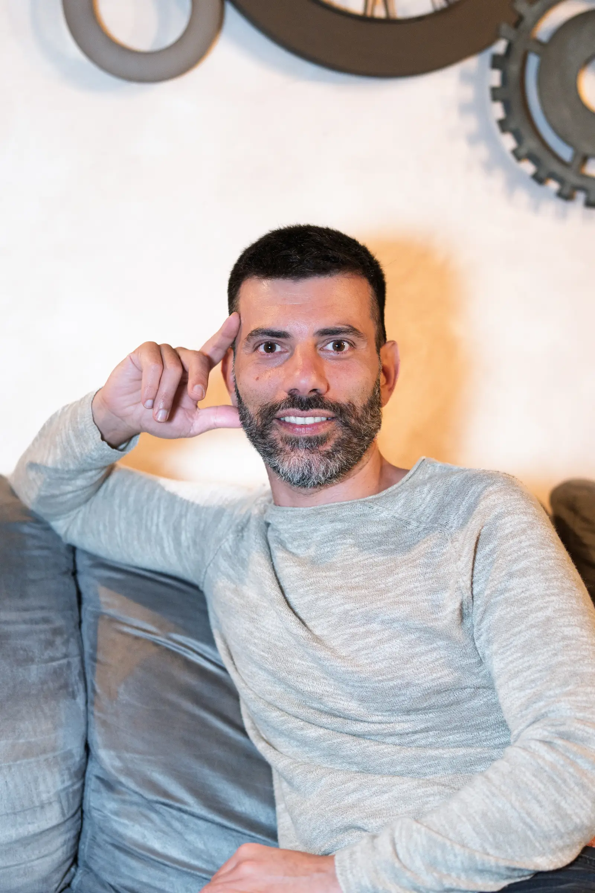

Colloqui psicologici a Santena (TO) e online, per adulti, giovani adulti e coppie. Un luogo di ascolto per comprendere ciò che stai attraversando e iniziare a muoverti con più chiarezza.
A chi mi rivolgo →
Ci sono momenti in cui ci si sente bloccati, sovraccarichi o in difficoltà, senza riuscire a dare un senso a quello che si sta vivendo. In questi momenti, avere uno spazio di ascolto può aiutare a comprendere ciò che sta accadendo e ritrovare un equilibrio.
Sono Ottaviano Coniglio, psicologo. Mi sono laureato in Scienze del Corpo e della Mente presso l’Università degli Studi di Torino e sono iscritto all’Albo A degli Psicologi del Piemonte, n. 12571.
Attualmente sono in formazione presso l’Istituto di Gestalt HCC Italy di Milano. Il mio lavoro integra una prospettiva gestaltica con un’attenzione concreta alla relazione e al modo in cui l’esperienza prende forma anche attraverso il corpo.
Lavoro con adulti, giovani adulti, coppie di qualunque genere e orientamento sessuale e gruppi. Mi rivolgo a chi attraversa difficoltà emotive, relazionali o momenti di passaggio, ma anche a chi sente il bisogno di capire meglio ciò che sta vivendo e il modo in cui lo attraversa.

Il mio modo di lavorare nasce dall’integrazione tra prospettiva gestaltica e attenzione all’esperienza corporea. Non si tratta solo di capire, ma di entrare in contatto diretto con ciò che si vive, mentre accade.
Il cambiamento non avviene solo attraverso le parole, ma dentro una relazione reale. Il modo in cui ci si incontra e si resta nell’esperienza diventa parte attiva del percorso.
Le emozioni si esprimono anche attraverso il corpo: tensioni, respiro, postura, sensazioni. Portare attenzione a questi aspetti rende il lavoro più concreto.
Il cambiamento non si forza. Ha bisogno di tempo, continuità e di uno spazio in cui l’esperienza possa essere riconosciuta, attraversata e riorganizzata.
Non propongo percorsi standardizzati. Ogni lavoro nasce dall’incontro tra una domanda specifica, una storia personale e il modo in cui l’esperienza prende forma nel presente.
Un primo spazio di 20-30 minuti, gratuito, per capire cosa ti porta qui e valutare insieme se un percorso può essere utile.
GratuitoPercorsi per affrontare stress, difficoltà personali, blocchi emotivi o cambiamenti di vita, con attenzione alla relazione, al corpo e al presente.
In presenza e onlineNon si tratta di stabilire chi ha ragione, ma di comprendere cosa sta accadendo nella relazione. Uno spazio per ascoltare entrambi, uscire dalle dinamiche che si ripetono e ritrovare una possibilità di contatto più autentico.
Su appuntamentoAl momento non ancora attivi in studio, ma fanno parte della direzione del progetto ENKYŌ e saranno pensati come spazi di esperienza, relazione e crescita condivisa.
In sviluppoSe hai dubbi o non sai da dove iniziare, puoi scrivermi senza impegno. Possiamo capire insieme se questo è lo spazio giusto per te.
Non c’è un profilo unico. Quello che accomuna le persone che scelgono di venire qui è il desiderio di capire meglio ciò che stanno vivendo e il modo in cui lo stanno portando.
Senti di portare un peso che fatichi a lasciare andare. L’ansia si manifesta nei pensieri, nel corpo, nelle notti o in una tensione continua difficile da nominare.
Cambiare lavoro, città, relazione, ruolo o direzione di vita può destabilizzare, anche quando il cambiamento è desiderato.
Conflitti, distanza, ripetizioni che sembrano tornare sempre uguali, fatiche nel legame o nella vicinanza.
Non sempre c’è un’emergenza. A volte c’è la sensazione che qualcosa meriti di essere capito meglio, prima che diventi un blocco più grande.
Tensioni, stanchezza profonda, sensazioni fisiche che sembrano parlare di qualcosa che non ha ancora trovato parole.
Il supporto psicologico non è riservato alle crisi acute. Può essere un modo per guardare con più lucidità ciò che si sta vivendo e iniziare a muoversi in una direzione più chiara.

Un primo colloquio orientativo serve proprio a questo: capire cosa ti porta qui, fare chiarezza e valutare insieme se un percorso può esserti utile.
È un incontro orientativo di 20-30 minuti, gratuito. Serve per capire cosa ti porta qui e valutare insieme se un percorso può essere utile. Non è una presa in carico né una valutazione completa.
No. Molte persone iniziano un percorso non perché stanno male abbastanza, ma perché sentono che qualcosa meriti di essere capito meglio. Non serve una diagnosi: basta la percezione che fermarsi abbia senso.
Il modo più diretto è fare un primo incontro. Il mio approccio mette al centro la relazione, l’esperienza e anche il corpo. Se cerchi qualcosa di molto direttivo, potrebbe non essere la scelta più adatta.
Dipende. Ci sono percorsi più brevi, legati a momenti specifici, e percorsi più continuativi. La durata non è definita a priori: si costruisce nel tempo in base a ciò che emerge.
Sì, se c’è uno spazio adeguato e una buona connessione. Il lavoro online può essere efficace quanto quello in presenza e in alcuni casi facilita la continuità del percorso.
Sì. Chi esercita la professione psicologica è tenuto al segreto professionale. Tutto ciò che viene condiviso resta riservato, salvo le eccezioni previste dalla legge in situazioni di rischio grave e immediato.
Sì. Il percorso resta sempre una scelta della persona. L’unica cosa che chiedo è di poter dedicare uno spazio anche alla conclusione, invece di interrompere bruscamente.
Se vuoi leggere le recensioni oppure lasciare la tua esperienza, puoi farlo direttamente su Google.
Vai alle recensioni GooglePuoi scrivere, chiamare o usare il modulo. Il primo incontro è uno spazio orientativo, breve e senza impegno, utile per capire se ha senso iniziare un percorso.
"Se stai pensando di scrivere, probabilmente una parte di te ha già deciso. Possiamo partire da lì."
Rispondo personalmente a ogni richiesta entro 24-48 ore.